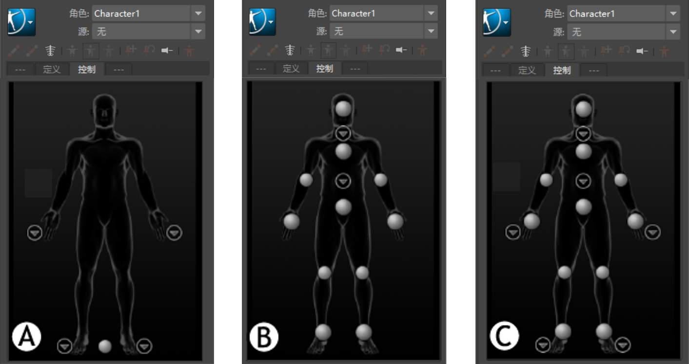
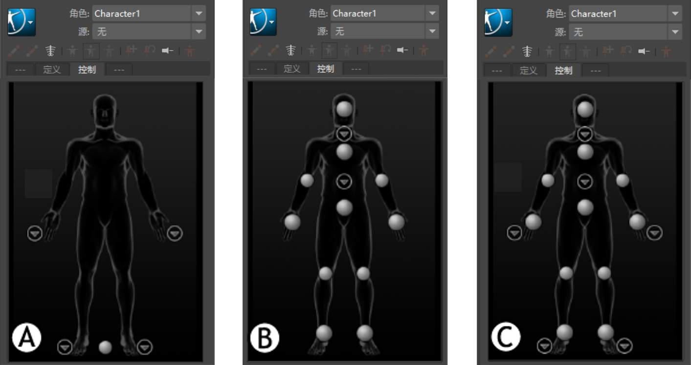

- 重命名角色(Rename Character)
- 打开“重命名角色”(Rename Character)对话框，从中可以重命名当前角色。
- 编辑骨架(Edit Skeleton)
- 为现有骨架创建骨架定义。请参见为 HumanIK 定义现有骨架。
- 在 Maya 2016 中，该选项称为“定义 > 骨架”(Define > Skeleton)。
-
重要： 必须选择骨架以激活“编辑骨架”(Edit Skeleton)菜单选项。
-
- 创建骨架(Create Skeleton)
- 创建具有有效骨架定义的新 HumanIK 角色。默认情况下，新角色命名为 Charactern，其中 n 是顺序编号。请参见创建和定义 HumanIK 骨架。
- 重置(Reset)
- 将骨架设置区域中的字段重置为默认值。
- 显示标签(Show Labels)
-
允许您切换选定角色每个组件的显示。启用或禁用以下项的显示：
- 骨架（关节和骨骼对象）
- IK 效应器
- FK 效应器
- 标签
- 在 Maya 2016 中，该选项称为“显示/隐藏”(Show/Hide)。
- 导入骨架模板(Import Skeleton Template)
-
打开“导入模板”(Import Template)窗口并加载 Maya 附带的 HIK 骨架模板之一或先前导出的模板。请参见 HumanIK 角色控制模板。
- 在 Maya 2016 中，该选项称为“导入模板”(Import Template)。
- 导出骨架模板(Export Skeleton Template)
-
打开“导出模板”(Export Template)窗口，可在其中保存 HIK 骨架模板文件。此操作会将当前骨架的骨架结构信息和关节平移信息另存为文本文件。随后可以重新加载该信息以使用“导入模板”(Import Template)选项应用到其他骨架。请参见导入或导出 HumanIK 骨架模板。
- 编辑角色定义(Edit Character Definition)
-
- 编辑角色定义(Edit Character Definition)
- 在“属性编辑器”(Attribute Editor)中打开角色节点定义。
- 在 Maya 2016 中，该选项称为“HIK 定义”(HIK Definition)。
- 编辑 HIK 特性(Edit HIK Properties)
- 选择重定目标 HIKProperties 节点并在“属性编辑器”(Attribute Editor)中显示高级重位目标属性。这些设置用于希望调整特定 HIK 解算器参数的高级用户。
- 重置 HIK 特性(Reset HIK Properties)
-
重置 HIKPropertyState 节点中的任何已调整重定属性为默认值。
- 配置镜像匹配(Configure Mirror Matching)
- 打开“配置镜像匹配”(Configure Mirror Matching)窗口，通过该窗口可将新的字符串对添加到“定义”(Definition)选项卡用于检查镜像匹配骨骼名称的列表。如果在骨骼命名约定中使用了不同的子字符串来表示身体的左侧和右侧，请选择该选项以添加子字符串。请参见激活并配置镜像匹配。
- 加载角色定义模板(Load Character Definition Template)
- 可让您通过应用自己的命名模板来映射骨骼。打开加载骨架定义(Load Skeleton Definition)窗口。
- 在 Maya 2016 中，该选项称为“加载骨架定义”(Load Skeleton Definition)。
- 保存角色定义模板(Save Character Definition Template)
- 打开“保存骨架定义”(Save Skeleton Definition)窗口。请参见“保存骨架定义”(Save Skeleton Definition)窗口。
- 在 Maya 2016 中，该选项称为“保存骨架定义”(Save Skeleton Definition)。
- 导出角色定义(Export Character Definition)
- 打开一个对话框，从中可以将骨骼映射以 .hikc 格式导出。
注： 如果在运行 2017 HIK 运行时时从最新的 Maya 版本导出 .hikc 文件，请使用以下环境变量：MAYA_WRITE_HIK_V1（如果您具有需要与旧版 HumanIK Gameware 兼容的角色定义文件）。有关详细信息，请参见常规环境变量主题中的“MAYA_WRITE_HIK_V1”选项。
- 在 Maya 2016 中，该选项称为“导出定义”(Export Definition)。
- 编辑控制绑定(Edit Control Rig)
-
- 绑定外观(Rig Look)
-
允许您选择要处理的控制装备效应器样式。
- 对齐/同步控制装备(Align/Synchronize Control Rig)
-
启用后，控制装备的 IK 和 FK 效应器始终同步显示，即使它们在关键帧之间的插补不同。如果要查看 IK 和 FK 解决方案的单独插值路径，请禁用此选项。
使用“全身”(Full Body)或“身体部位”(Body Part)模式时，此功能可让您同步控制装备的操纵和设定关键帧。请注意，此功能不适用于“选择”(Selection)模式。
- 删除控制绑定(Delete Control Rig)
- 删除当前角色的控制装备。
- 加载 UI 配置(Load UI Configuration)
-
 打开“导入 UI 配置文件”(Import UI Configuration File)对话框，从中可以选择自定义配置文件以用作“控制”(Controls)选项卡的新默认布局。请参见加载新布局和 HumanIK 角色控制模板。
打开“导入 UI 配置文件”(Import UI Configuration File)对话框，从中可以选择自定义配置文件以用作“控制”(Controls)选项卡的新默认布局。请参见加载新布局和 HumanIK 角色控制模板。随 Maya 一起安装的三个角色控制模板
- 保存 UI 配置...(Save UI Configuration...)
- 刷新“控制”(Controls)选项卡布局。使用此选项可查看在使用“加载 UI 配置”(Load UI Configuration)命令加载配置文件后，对配置文件所做的更改。
- 在 Maya 2016 中，该选项称为“更新 UI 配置”(Update UI Configuration)。
- 编辑自定义装备映射(Edit Custom Rig Mapping)
- 为当前角色创建自定义装备映射。角色必须具有自定义装备和有效的骨架定义，您才能定义自定义装备。请参见创建自定义装备映射。
注：
- 如果骨架定义有效并锁定，选择此选项会打开“HumanIK”窗口中的“自定义装备”(Custom Rig)选项卡。
- 如果骨架定义有效并解锁，选择此选项会自动锁定定义，然后打开“自定义装备”(Custom Rig)选项卡。
- 如果骨架定义无效并解锁，选择此选项将提示显示“锁定角色”(Lock Characterization)对话框。单击“确定”(Ok)将使“定义”(Definition)选项卡成为焦点，从中可正确地定义骨架。
- 在 Maya 2016 中，该选项称为“自定义装备”(Custom Rig)。
-
- 导入自定义装备映射(Import Custom Rig Mapping)
- 单击可打开“导入装备映射”(Import Rig Mappings)窗口，并加载之前导出的自定义装备映射 XML 文件。
- 在 Maya 2016 中，该选项称为“导入映射”(Import Mapping)。
- 导出自定义装备映射(Export Custom Rig Mapping)
- 打开“保存装备映射”(Save Rig Mappings)窗口，从中可以 XML 文件格式保存自定义装备映射。
- 在 Maya 2016 中，该选项称为“导出映射”(Export Mapping)。
- 加载 UI 配置(Load UI Configuration)
- 打开“导入 UI 配置文件”(Import UI Configuration File)对话框，从中可以选择自定义配置文件以用作“自定义装备”(Custom Rig)选项卡的新默认布局。请参见加载新布局。
- 保存 UI 配置(Save UI Configuration)
- 刷新“控制”(Controls)选项卡布局。使用此选项可查看在使用“加载 UI 配置”(Load UI Configuration)命令加载配置文件后，对配置文件所做的更改。
- 在 Maya 2016 中，该选项称为“更新 UI 配置”(Update UI Configuration)。
- 烘焙(Bake)
-
“烘焙”(Bake)菜单可显示让您将动画烘焙到骨架、控制装备或自定义装备的选项。这些选项根据 HumanIK 窗口中输入的值进行更新，包括目标角色、源以及操纵和设置关键帧模式。有关这些选项的完整列表，请参见 HumanIK 窗口中的烘焙选项。注： 必须从 HumanIK 窗口启动 HumanIK 烘焙。不推荐选择“编辑 > 关键帧 > 烘焙模拟”(Edit > Keys > Bake Simulation)来烘焙 HumanIK 角色。
- 添加到当前选择(Add to Selection)
-
- 骨架(Skeleton)
- 将所有关节对象添加到您的当前选择。
- IK
- 将所有 FK 效应器添加到您的当前选择。
- FK
- 将所有 FK 效应器添加到您的当前选择。